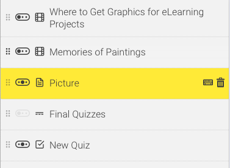

Themes have received more updates, predominantly changes to the menu as well as some visual changes in the editor and minor bugfixes. The editor has had some icon changes made to the menu: Icon helpers have been added for renaming and deleting navigation items due to some accessibility issues renaming pages and using keyboard shortcuts for navigation (depending on where focus was). You cna now get a better idea of what types of item each navigation page is by its icon. The drag and indent icons have also changed to better represent the action they perform.
Menu items can now be indented twice - that's one whole extra place!

There are now Sections, Captioned images, and a bunch of bugfixes!